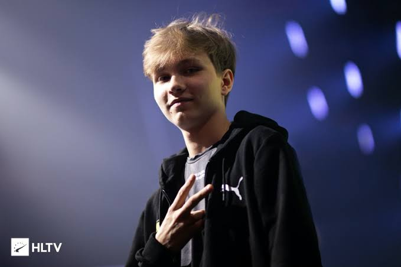

Idola Saya

m0NESY
Ilya 'm0NESY' Osipov adalah pemain profesional Counter-Strike: Global Offensive (CS) yang lahir pada 1 Mei 2005 di Rusia. Dikenal sebagai salah satu pemain termuda dan paling berbakat di dunia e-sports, m0NESY saat ini bermain untuk tim G2 Esports. Meskipun usianya masih sangat muda, ia telah menunjukkan performa luar biasa di panggung internasional, menjadikannya pemain yang sangat diperhitungkan dalam skena kompetitif CS. Dengan bidikan yang presisi dan kecerdasan taktis, m0NESY sering disebut sebagai salah satu rising stars di dunia e-sports. Sekarang m0NESY masih aktif bermain dan saat ini berada di tim G2 Esports dalam Franchise CS2 generasi baru dari CSGO.
Pencapaian
| Juara | Tim | Turnamen | |
|---|---|---|---|
| 1st | BLAST Premier Fall Final 2024 | Stats | |
| 3-4th | ESL Pro League Season 20 | Stats | |
| 2nd | Esports World Cup 2024 | Stats | |
| 1st | IEM Dallas 2024 | Stats | |
| 3-4th | IEM Chengdu 2024 | Stats | |
| 3-4th | PGL CS2 Major Copenhagen 2024 | Stats | |
| 3-4th | IEM Sydney 2023 | Stats | |
| 3-4th | Gamers8 2023 | Stats | |
| 1st | IEM Cologne 2023 | Stats | |
| 3-4th | BLAST Premier Spring Final 2023 | Stats | |
| 1st | IEM Katowice 2023 | Stats | |
| 1st | BLAST Premier World Final 2022 | Stats | |
| 3-4th | ESL Pro League Season 16 | Stats | |
| 3-4th | BLAST Premier Spring Final 2022 | Stats | |
| 2nd | IEM Katowice 2022 | Stats |